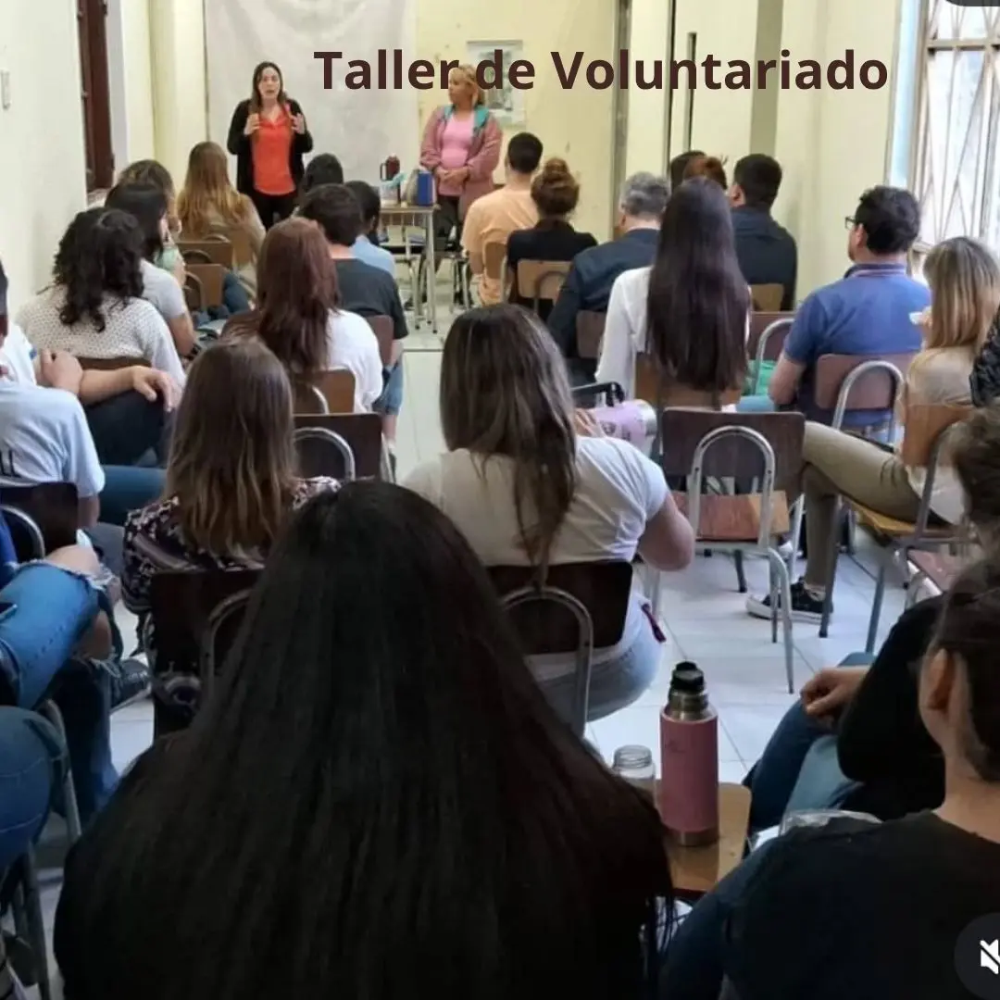
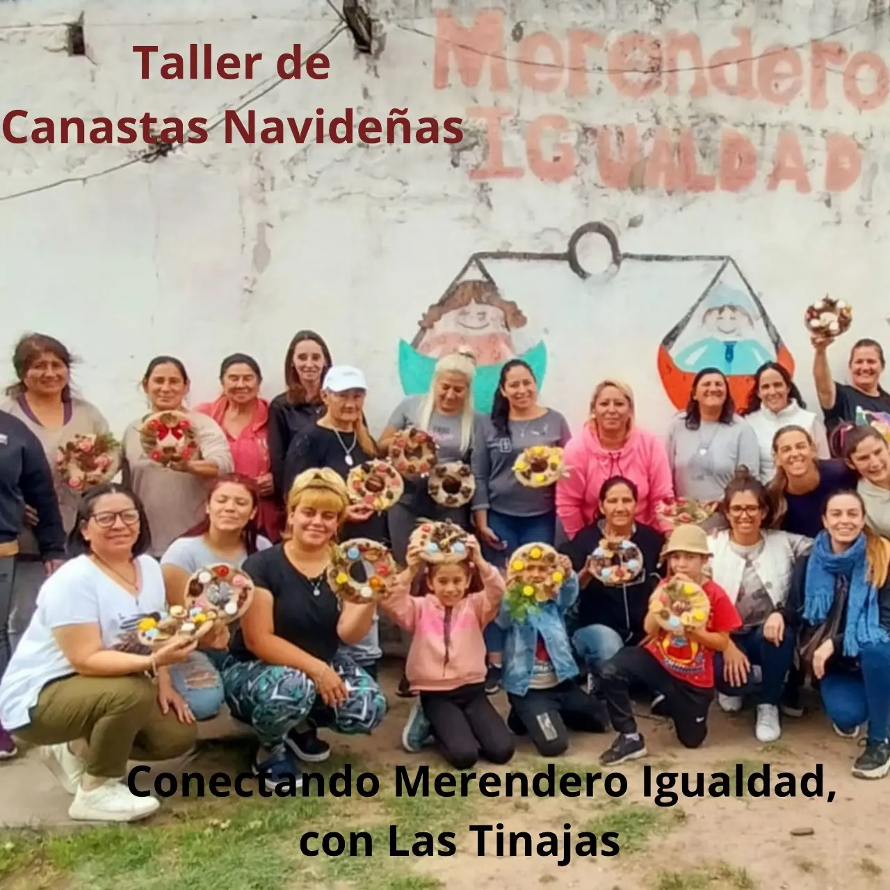
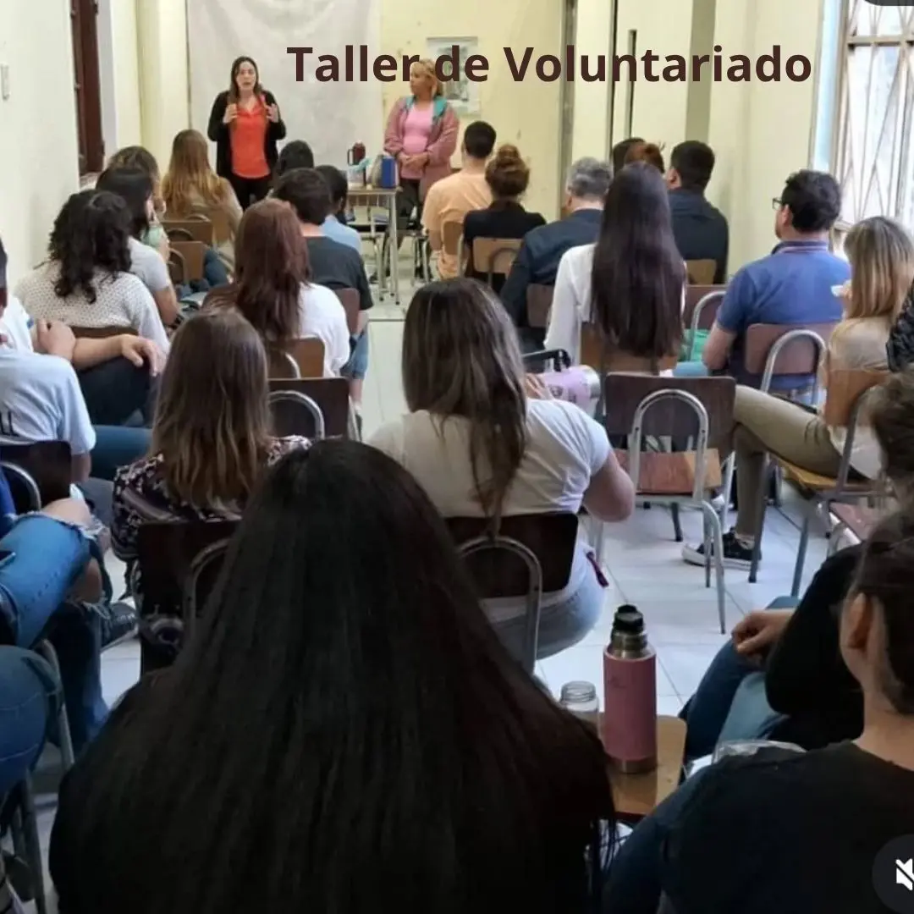
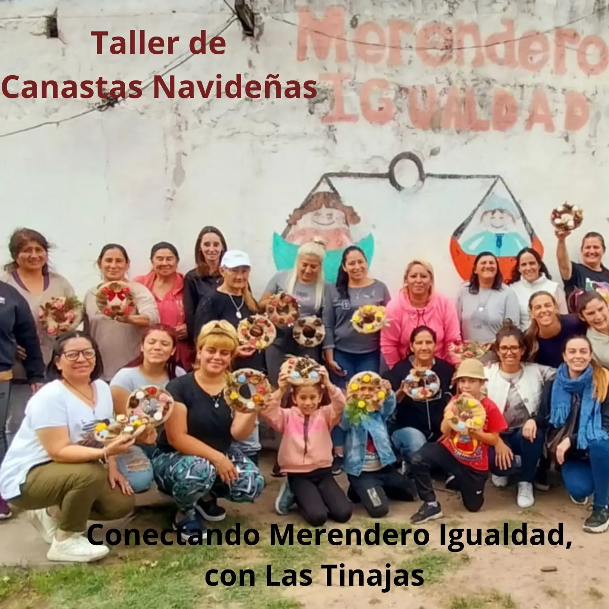

POLÍTICA DE COOKIES
En Fundación Cruxes, valoramos la privacidad de quienes visitan nuestro sitio web. Nuestro uso de cookies se realiza respetando la normativa establecida en la Ley 25.326 de Protección de los Datos Personales, Reglamento General Sobre Protección de Datos Personales y Convenio 108+, respectivamente, garantizando transparencia, integridad y consentimiento informado en el manejo de datos.
- ¿Qué son las cookies?
Las cookies son pequeños archivos que se almacenan en tu dispositivo al visitar nuestro sitio web. Estas nos permiten optimizar tu experiencia de navegación y personalizar los contenidos según tus preferencias. - Cookies que utilizamos
En nuestro sitio web empleamos cookies bajo las siguientes categorías:
- Cookies esenciales: Necesarias para el funcionamiento básico del sitio. Sin estas cookies, no podrías navegar correctamente.
- Cookies de análisis: Nos permiten recopilar información estadística, como las páginas más visitadas, para mejorar nuestros servicios.
- Cookies de preferencias: Almacenan configuraciones elegidas, como idioma o región, para personalizar tu experiencia.
- Consentimiento informado
Al acceder a nuestro sitio web te informaremos sobre el uso de cookies mediante un banner o aviso emergente. Tendrás la opción de aceptar, rechazar o personalizar las cookies según tus preferencias. - Gestión de cookies
Puedes administrar las cookies a través de la configuración de tu navegador, habilitándolas, deshabilitándolas o eliminándolas. Ten en cuenta que, al desactivar algunas cookies, ciertas funcionalidades del sitio podrían no estar disponibles. - Protección de datos personales
Cualquier información recopilada a través de cookies será tratada conforme lo establecido en la Ley 25.326. Tus datos se utilizarán...